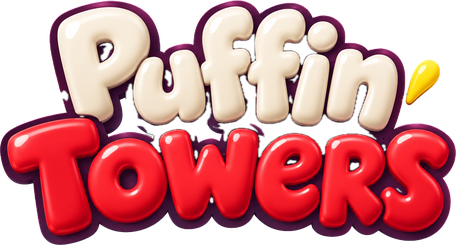

How do I play?
Every night, Skipper the puffin rebuilds the lighthouse. Blocks slide back and forth above the tower: tap anywhere to drop one, and stack the tower as high and as neatly as you can. A block that lands past the edge falls into the sea. There's a full guide in the game: Settings → How to Play.
What are Perfects and combos?
Land a block right in the middle of the one below for a Perfect, or right at the edge for a Close one. Both keep your combo going, and the combo multiplies your points, up to ×8. A window block landed with a Perfect lights up for extra points, and lantern blocks are worth coins.
What does the wind do?
The flag at the top of the screen shows which way the wind blows and how hard. Falling blocks drift with it, so aim a little into the wind. The Still Air power-up stops it for a night.
What are the three modes?
Stormy Night goes on until three blocks have fallen into the sea, and the wind keeps rising. Daily Light gives everyone the same 30 blocks each day. Calm Seas has no wind and nothing to lose: tap Light the Lamp when you're done.
What happens at the end of a night?
Skipper lights the lamp and its beam sweeps across the sea. A taller lighthouse shines farther and a neater one shines wider. Every boat the light reaches sails home for points and coins. Tap while the light is on a boat to send it a Signal for bonus points. The light finds bottles too: some hold messages for your album.
How do I get coins?
From building points, lantern blocks, boats, bottles and awards. Spend them in the Shop on upgrades that last, or on power-ups before a night. There's nothing to buy with real money: everything is earned by playing.
Is my progress saved?
Yes, on your iPhone. Your coins, best scores, upgrades, awards, messages and stats are saved automatically. They stay on this iPhone only: they don't sync between devices, and deleting the app deletes them.
I can't hear any sounds
Puffin Towers follows your iPhone's ring/silent switch, so flip it to ring. Music and sound can also be switched on and off with the buttons at the top of the home screen, in the pause menu and in Settings.
How do I start over?
Home screen → Settings → Start Over. This clears your scores, coins, upgrades, awards, messages and stats. Sound, music and vibration settings stay as they are.
Headings are set in Lilita One by Juan Montoreano, used under the SIL Open Font License.